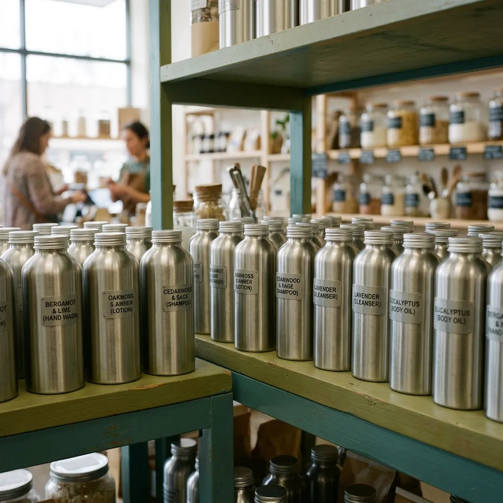

Plain staples by exact weight.
Our complete stockroom inventory, dispensed per hundred grams into returnable brushed steel.
Our Bedminster dispensary stocks the essential dry goods and liquid formulas that power urban kitchens, bathrooms, and laundry routines. We eschew fancy branding and artificial fillers in favour of pure, reliable ingredients priced strictly by net weight. Whether you need wholesome grains or powerful surface cleaners, your bill reflects only the net contents dispensed into our returnable canisters, leaving zero packaging surcharges on your weekly household invoice.

Pantry & dry goods inventory
Our dry pantry department focuses on nutritionally dense staples sourced from dependable British growers, kept protected from humidity inside sealed steel canisters. All prices are displayed per hundred grams without brand markup or packaging overhead. Organic jumbo rolled oats sit at thirty-five pence per hundred grams, ideally matched to our generous HT-1200 canister for daily breakfasts. Aromatic basmati rice is priced at forty-two pence per hundred grams, while green whole lentils run at thirty-eight pence per hundred grams for evening cooking. For daily baking, fine cornflour costs thirty-two pence per hundred grams in our compact HT-500 jar, and whole roasted coffee beans from local Bristol roasters sit at one pound twenty per hundred grams inside our HT-750 container.
Organic Jumbo Oats
£0.35 per 100g · HT-1200 Canister
Aromatic Basmati Rice
£0.42 per 100g · HT-1200 Canister
Bristol Roasted Coffee
£1.20 per 100g · HT-750 Canister
Cleaning & personal care liquids
Handling potent detergents and delicate personal soaps requires strict containment procedures and chemical compatibility. We decant cleaning formulas directly on-site inside our converted dairy counter, utilising gravity valves that eliminate spilling and aeration. Our unfragranced biological laundry liquid sells for forty-five pence per hundred millilitres, providing dependable cold-water cleaning without optical brighteners. For kitchen dishes, our concentrated citrus washing-up liquid sits at thirty-eight pence per hundred millilitres, cutting heavy grease effectively. Within personal care, pure liquid castile soap costs sixty-five pence per hundred millilitres, serving as a versatile skin wash or general surface cleaner. Every liquid vessel departs our counter sealed by our silicone gasket lid, which undergoes vacuum leak testing to ensure secure upright storage during transit across city streets.
Biological Laundry Liquid
£0.45 per 100ml · HT-750 Canister
Washing-Up Liquid
£0.38 per 100ml · HT-750 Canister
Pure Castile Soap
£0.65 per 100ml · HT-500 Canister
How container deposits and credit accrue
Your invoice divides plainly into two open components: consumable net weight and a refundable container deposit, with zero hidden packaging fees. Our deposit tier system applies three rates across our lineup: the compact HT-500 vessel requires a three-pound deposit, our flagship HT-750 medium canister requires four pounds, and the expansive HT-1200 large container holds a five-pound-fifty deposit. As you return spent canisters to our counter or delivery driver, these values immediately rebound into your ledger account as store credit or an instant refund. For scheduled Bristol delivery rounds, we apply a twenty-five pound minimum order threshold, keeping transport free of extra fuel supplements.
Frequently Asked Questions
Clear answers regarding container ownership, legal metrology, hygiene standards, and our Bristol delivery logistics.
Can I bring my own glass jars or plastic tubs for refilling?
No, our automated weighbridge system only functions with our issued brushed-steel canisters. Every Halcyon Tare vessel carries a laser-etched six-digit identification code and a certified tare weight. Using external jars would introduce measurement variances and bypass the arithmetic that keeps our checkout accurate.
How do you guarantee hygiene and sanitisation between different customers?
Every canister returned to our Bedminster facility undergoes a three-stage thermal wash and chemical disinfection process within our commercial sanitisation chamber. We replace every silicone sealing gasket before visual inspection under laboratory lighting, ensuring each vessel is completely sterile before stockroom replenishment.
What happens if a canister is lost or suffers accidental damage?
If a canister is permanently misplaced, the associated initial deposit remains on our ledger to fund a replacement steel vessel from our foundry suppliers. Minor surface dents incurred during normal household use are accepted without penalty and never impact your deposit refund.
What is your local delivery radius across Bristol neighbourhoods?
Our electric cargo delivery rounds operate from our Bedminster base across postal districts BS1, BS3, BS6, BS7, and BS8. If your home resides outside these core Bristol delivery zones, you can select our counter collection option to pick up filled orders from our dairy.
How easy is it to modify or cancel a standing subscription order?
You can adjust your selected staples, change delivery frequencies, or cancel your standing refill order entirely through your online account portal with zero notice periods. Upon closure, simply hand back accumulated empty canisters at our counter to receive your remaining deposit balance immediately.